Can you see the sky tonight? A project to predict night sky visibility from weather, smoke, moonlight, and light pollution.
The project
Project Introduction
Good stargazing conditions depend on more than a clear forecast.
Stargazing conditions in the Boulder, CO area depend on a combination of factors — light pollution, cloud cover, wildfire smoke, and moon or twilight conditions — that aren't currently combined into a single predictive tool. Stargazers, astro-tourism operators, and astronomy educators are left to piece it together themselves, or just guess.
This is a planning problem as much as a data problem. Right now, anyone who wants to know whether tonight is worth the drive up to a dark-sky spot has to manually cross-reference a weather app, an air-quality app, and a light-pollution map, then guess how those pieces interact.
Our goal is to build a model that predicts night sky visibility quality for a given date and time window in Boulder, producing a score or classification that lets people plan ahead rather than relying on guesswork.
Can night sky visibility quality in the Boulder, CO area be predicted from a combination of weather, air quality, light pollution, and astronomical factors on a given night?
Who this affects
The gap between "clear forecast" and "clear sky" shows up differently depending on who's asking:
Stargazers and astrophotographers, deciding whether a trip out of the city is worth it on a given night.
Astro-tourism operators running paid star parties and dark-sky tours, who need advance notice to plan or reschedule.
Astronomy educators, including university programs and planetariums, timing observation sessions around conditions students can actually see something in.
Land managers and dark-sky advocates, who use visibility data to make the case for lighting policy in areas like Boulder County.
What exists today
Each piece of this problem is already measured somewhere. The National Weather Service and Open-Meteo provide cloud cover forecasts and historical weather. The EPA's AirNow tracks hourly air quality as a proxy for wildfire smoke. The World Atlas of Artificial Night Sky Brightness maps light pollution from satellite data. The U.S. Naval Observatory publishes moon phase and twilight times. What's missing is anything that combines these into a single, forward-looking answer to the question people actually have: is tonight good for stargazing? That's the gap this project is trying to close.
Colorado light pollution map (Bortle scale), via Go-Astronomy.com.
Our plans this semester
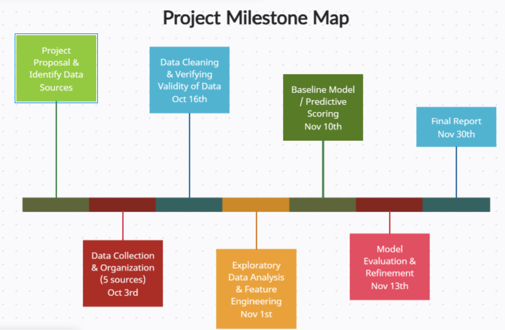
Research questions
What we're trying to find out
?
How often are Boulder-area nights clear, smoke-free, and moonless at the same time, and how does that vary by month and year from 2018 to 2025?
?
How much of the summer clear sky advantage is lost to smoke and how does observed night sky visibility differ between wildfire season and the rest of the year?
?
After accounting for site, how strongly are cloud cover, smoke, and moon illumination each associated with observed limiting magnitude?
?
Using only information that would be known the day before how well can next-night sky visibility be predicted, and how does that compare with a site-only baseline?
Data sources
Six sources, one nightly table
Weather, air quality, light pollution, orbital mechanics and citizen science don't normally share a table. This project pulls them onto one, for 16 Colorado sites and every night from 2018 to 2025. Where each source came from, what every column means and how the tables were built are in the data README.
Globe at Night
Citizen-science reports of the faintest stars visible to the naked eye (limiting magnitude). This is our measure of what observers actually saw. NSF NOIRLab, CC BY 4.0.
Open-Meteo Historical Weather API
Hourly modelled cloud cover (total, low, mid and high), humidity, temperature, wind and precipitation for each site, averaged over the dark hours of each night.
EPA Air Quality System (AQS)
Validated daily PM2.5 from the nearest ground monitor, a measure of smoke and other particles at the surface.
NOAA Hazard Mapping System (HMS)
Daily satellite-traced smoke plumes rated light, medium or heavy, which capture smoke higher in the air that ground monitors miss.
VIIRS Nighttime Lights
Annual satellite measurements of artificial light at each site, from the Earth Observation Group at the Colorado School of Mines, as our light-pollution measure.
Skyfield (computed)
Moon phase, moon position and the hours of astronomical darkness for every site and night, calculated from the JPL DE421 ephemeris.
Major constraints. No direct ground-truth measure of "dark sky visibility" exists, so a proxy such as sky quality meter readings or citizen reports is needed — which introduces possible bias.
Wildfire smoke is seasonal, and observers report mostly on clear nights, so the reports over-represent good conditions. Cloud cover comes from a weather model rather than measurements at each site, and our prediction question uses the previous night's actual conditions rather than a weather forecast.
There's also no ability to independently record or check data on the ground, which limits confidence in the model's prediction accuracy.
Data Exploration
What the data shows before we model it
We built two tables: nightly conditions at 16 Colorado Front Range sites, and Globe at Night citizen reports of how dark the sky looked, with that night’s conditions attached. These plots are our first look at how they fit together. They were made before cleaning; after removing duplicates, daytime timestamps and invalid ratings, 46,752 site-nights and 2,088 observer reports remain, and those are what the models below use.
46,768site-nights of conditions (before cleaning)
2,884observer reports matched to a night (before cleaning)
16sites, 2018–2025
2,691reports with a limiting magnitude (before cleaning)
Summer has the clearest skies, and the most smoke
Research questions 1 and 2 · Dataset 1
Across all sites, clear, moonless nights are most common from June to September (about 14% of site-nights, versus roughly 4–8% in other months). Smoke follows the same calendar: it shows up on about 33% of June nights, 52% of July nights and 60% of August nights. The best season for cloud is also the worst season for smoke.
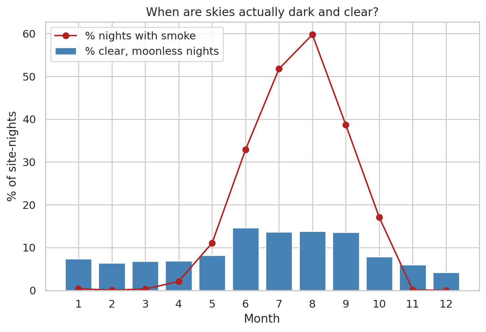
Share of site-nights that are clear (under 20% modelled cloud) and moonless (moon up less than 10% of dark hours), with the share of nights that had any HMS smoke overhead. This early look used a stricter moonless definition than the final analysis, so its percentages differ from Research question 1 below.
Where you stand matters more than anything else
Research question 3 · Dataset 2
Mean limiting magnitude ranges from about 2.5 at Sommers-Bausch to 6.1 at Crestone. That site-to-site gap is far larger than any weather effect we see below. The relationship with VIIRS radiance is not clean, though: some low-radiance sites (such as NCAR Mesa) report fairly poor skies, and several Boulder-area sites differ mainly in radiance and elevation.
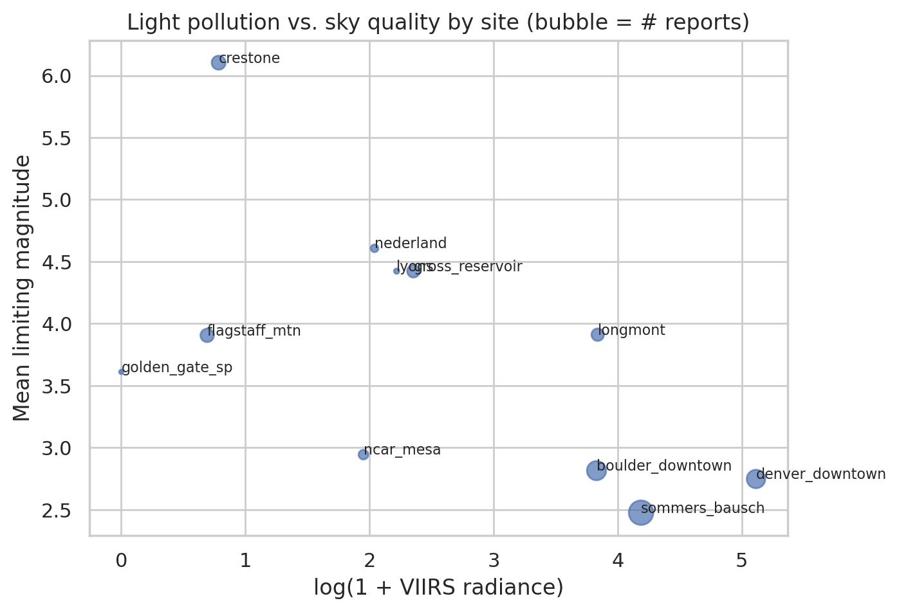
Mean limiting magnitude by site against log(1 + VIIRS radiance). Bubble size is the number of reports; sites with fewer than 10 reports are excluded.
Modelled cloud is a noisy proxy for what observers see
Research questions 3 and 4 · Dataset 2
Modelled cloud cover is only weakly related to limiting magnitude (r = −0.12). Part of the reason is that the weather comes from a reanalysis grid, not from the site. Observers who reported a clear sky had a median modelled cloud cover of about 18%, versus about 75% for those reporting over half the sky covered, so the model tracks observers loosely, but the boxes overlap heavily.
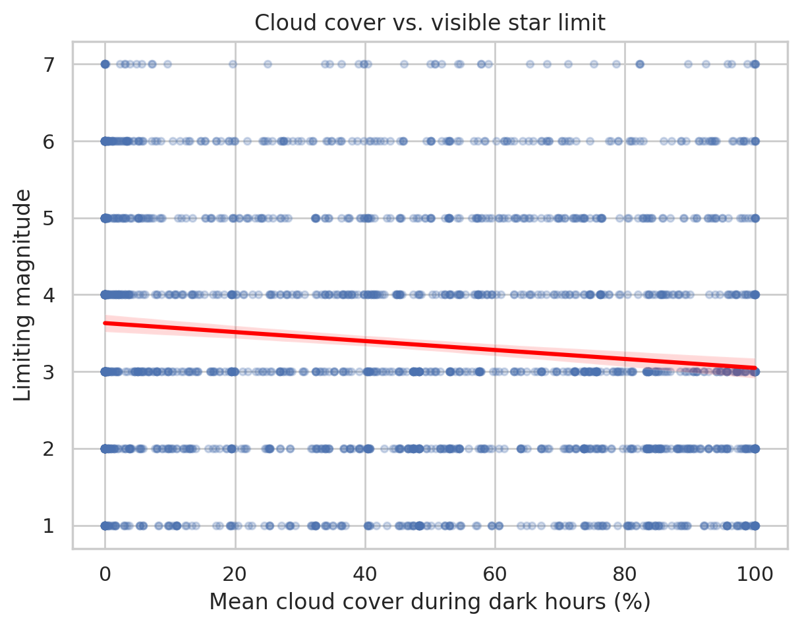
Mean modelled cloud cover during dark hours against limiting magnitude, with a linear fit.
Moonlight shows no clear effect in the raw data
Research question 3 · Dataset 2
Mean limiting magnitude is similar across moon-illumination bins, ranging from about 3.3 to 3.7, and it does not fall as the moon gets brighter. Most reports (1,345) were made when the moon was less than 25% illuminated and mostly down, so the brighter bins are thin. We suspect site differences are hiding the moon effect, and we will test it after accounting for site.
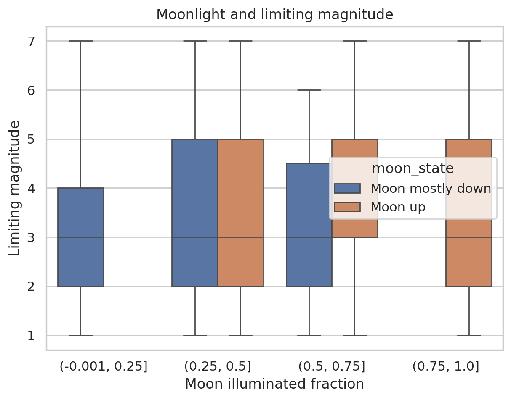
Limiting magnitude by moon illuminated fraction, split by whether the moon was above the horizon for more than half the dark hours.
Smoke: not enough observations to trust the pattern
Research questions 2 and 3 · Dataset 2
Counter-intuitively, nights with light smoke have a higher mean limiting magnitude (4.45, n = 78) than smoke-free nights (3.33, n = 1,981). Medium smoke averages 3.83 (n = 24) and heavy smoke 2.60 (n = 5). Only 136 of the 2,884 matched reports fall on a smoke day, so these numbers are fragile.
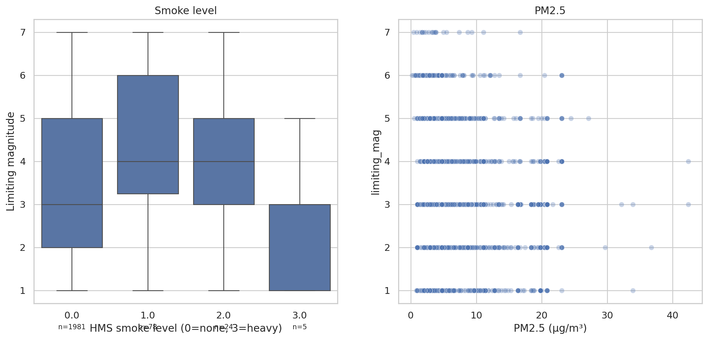
Left: limiting magnitude by HMS smoke level, with report counts. Right: daily PM2.5 against limiting magnitude.
Subtracting each site’s mean shrinks the light-smoke bump from about +1.1 to about +0.4, so part of it was simply which sites reported on smoky days. Some remains. Smoke reports come mostly from Crestone, Denver, Longmont and Sommers-Bausch, and the heavy-smoke group is only 5 reports from Denver and Longmont. Smoke is also a daytime-imagery product, so a plume on the map does not guarantee smoke overhead at night. We keep the satellite smoke level in the models and report how uncertain its estimates are.
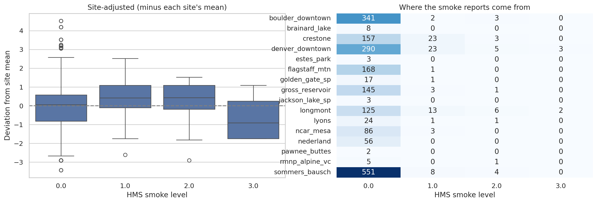
Left: raw limiting magnitude. Middle: deviation from each site’s own mean. Right: number of reports at each site and smoke level.
What this means for modelling
Site has to be in the model. It explains more of the variation than weather or moon, so we compare every model against a site-only baseline.
Weather signals are weak and noisy. Reanalysis cloud only loosely matches what observers saw, so we expect modest gains from weather features.
Smoke can’t be estimated reliably from observations. We will describe its seasonal pattern using the full nightly dataset and treat any visibility effect as exploratory.
The observer sample is uneven. Three sites (Sommers-Bausch, downtown Boulder and downtown Denver) hold 63% of matched reports, and Crestone’s reports come almost entirely from 2022–2023, so we validate by site and by date block instead of random splits.
Models & Evaluation
From description to prediction
Our four questions need different tools. Questions 1 and 2 ask how often good conditions happen, so we answer them by counting across every night and site, using the full nightly dataset rather than the sparse observer reports. Questions 3 and 4 ask how conditions relate to what people actually saw, so they use models fitted to the observer reports.
Shared setup. Every analysis starts from the same prepared tables, built by src/prep.py, so all four questions use identical definitions. A good night is clear (mean modelled cloud cover of 20% or less over the dark hours), smoke-free (no NOAA HMS smoke plume over the site that day) and moonless (moon above the horizon for no more than 25% of the dark hours, or no more than 25% illuminated). Questions 1 and 2 use the 12 Boulder-area sites. Models are trained on 2018–2022 and tested once on 2023–2025.
How we measure uncertainty. Nearby sites share the same weather, and smoke episodes last for weeks: a smoky day is followed by another about 70% of the time. Treating each night as independent would make our results look more certain than they are. Instead, our 95% intervals come from a block bootstrap that resamples whole calendar months, keeping one of each month in every resample.
Only about 1 in 11 nights is clear, smoke-free and moonless
Research question 1 · Descriptive frequency analysis · Dataset 1
Across 12 Boulder-area sites and 2,922 nights (35,064 site-nights), 9.3% of site-nights were good nights (95% interval 8.2–10.4%). That works out to roughly two or three good nights a month at any given site. September is the best month (11.9%) and December the worst (4.8%).
The monthly pattern is much flatter than cloud cover alone suggests. June to September has about twice as many clear nights as the rest of the year, but its short nights, frequent smoke and the moon cancel most of that. Between years, 2019 stands out at 14.5% (9.8–19.6%), the year with the least summer smoke. Every year from 2020 onward sits between 7% and 9%.
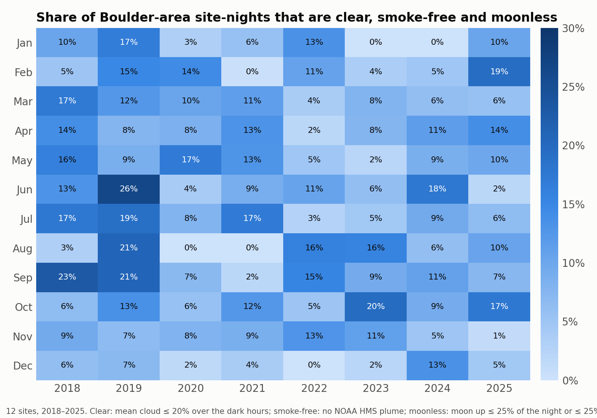
Share of Boulder-area site-nights that are clear, smoke-free and moonless, by month and year. Each cell pools 12 sites.
Does the answer depend on our threshold for "clear"? We repeated the count with stricter and looser cloud limits. The overall rate moves from 7.1% (10% cloud) to 11.3% (30% cloud), but the shape stays the same at every threshold: a September high and a December low.
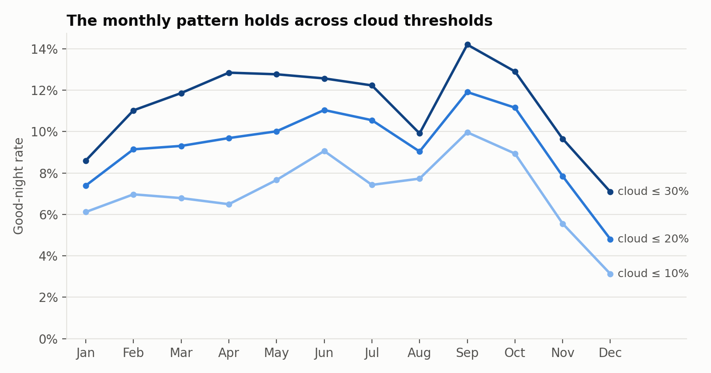
Good-night rate by month at three cloud-cover thresholds.
Smoke cancels most of summer's clear-sky advantage
Research question 2, Part A · Descriptive comparison · Dataset 1
From June to September, 52.6% of site-nights are clear, against 27.1% in the rest of the year: an advantage of 25.5 percentage points (95% interval 21.8–29.3). Once nights with smoke overhead are removed, that advantage shrinks to just 3.0 points. In other words, smoke cancels about 88% of the summer advantage (95% interval 70–108%).
August is hit hardest. 59% of its clear nights have smoke overhead, so the share of August nights that are both clear and smoke-free (21.5%) is about the same as January's (20.5%). We left the moon out of this comparison because the lunar cycle is the same in every season, so it cannot explain a seasonal difference.
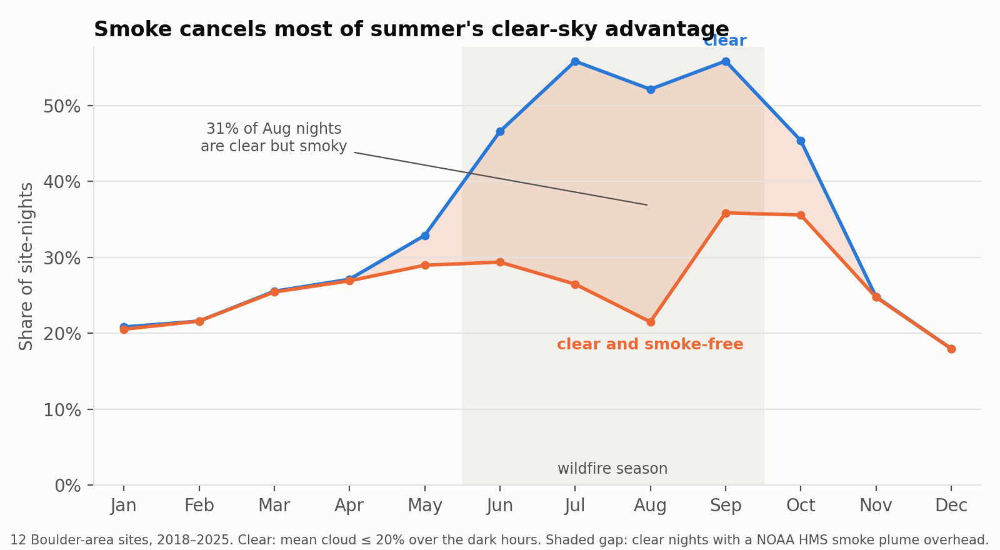
Share of Boulder-area site-nights that are clear, and clear and smoke-free, by month. The shaded gap is clear nights with a smoke plume overhead.
How much of this depends on light smoke? Most of it. If only medium and heavy plumes count as smoke, the share of the advantage lost falls from 88% to 28%. Light plumes are often high and thin, and NOAA draws them from daytime satellite images, so some may not affect the night sky at all. The year-to-year range is also wide: from 13% of the advantage lost in 2019 to more than 100% in 2020, 2021 and 2025, when clear, smoke-free summer nights were actually rarer than in the rest of the year.
Yet observers report better skies in wildfire season
Research question 2, Part B · Within-site comparison · Dataset 2
Comparing each site with itself, reports made from June to September are 0.40 magnitudes better than reports from the rest of the year (95% interval +0.17 to +0.65). This uses the 1,877 reports from the 7 sites with at least 5 reports in each season. Comparing within sites matters because summer and winter reports come from different places: a raw comparison would mostly measure where people observed, not when.
Six of the seven sites are higher in summer, with the clearest gains at Longmont (+0.89) and downtown Denver (+0.53). Flagstaff Mountain shows the largest gap (+1.54), but from only 8 summer reports. Gross Reservoir is the one site that is clearly worse in summer (−0.84). Crestone, Sommers-Bausch and downtown Boulder show small differences whose intervals include zero.
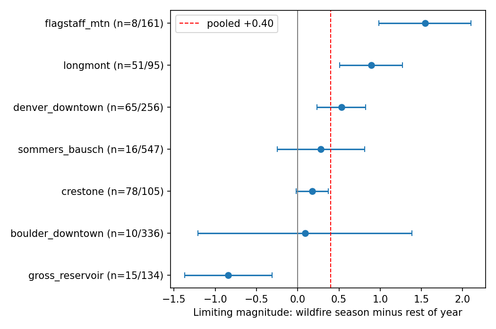
Limiting magnitude in wildfire season minus the rest of the year, by site, with 95% intervals. The dashed line is the pooled within-site difference. Labels give the number of summer and other reports.
Why this does not contradict Part A. Part A counts every night. Observers only report on nights they chose to go out, which in summer usually means a clear one. So these reports describe the nights people picked, not the typical summer night. The result does not show that smoke improves the sky. Per-site intervals use a simple formula and are narrower than the pooled interval, which resamples whole nights.
With site held fixed, only cloud cover has a clear association
Research question 3 · Linear regression with site fixed effects, ordinal logistic check · Dataset 2
Method. We regressed limiting magnitude on same-night cloud cover, satellite smoke level, PM2.5 and two moon measures, with a separate intercept for each site so that every comparison is within a site. A linear model keeps the coefficients readable in magnitudes. Because limiting magnitude is a 1–7 scale, we repeated the fit as an ordinal logistic regression as a check. Several reports often share a night, so 95% intervals come from resampling whole nights. Where PM2.5 is missing (mostly at Crestone, far from any monitor), we filled the median and kept a missing-value flag, so all 2,088 reports from 16 sites stay in.
Results. Cloud cover is the only condition whose interval excludes zero: −0.18 magnitudes per standard deviation (−0.24 to −0.11), or about half a magnitude between a fully clear and a fully cloudy night. Smoke (+0.04, −0.01 to +0.10), PM2.5 (−0.02, −0.10 to +0.05), moon illumination (−0.07, −0.30 to +0.14) and time with the moon up (−0.03, −0.23 to +0.19) are all indistinguishable from zero. The ordinal model agrees on the direction of every one of these, and again only cloud cover has an interval clear of zero.
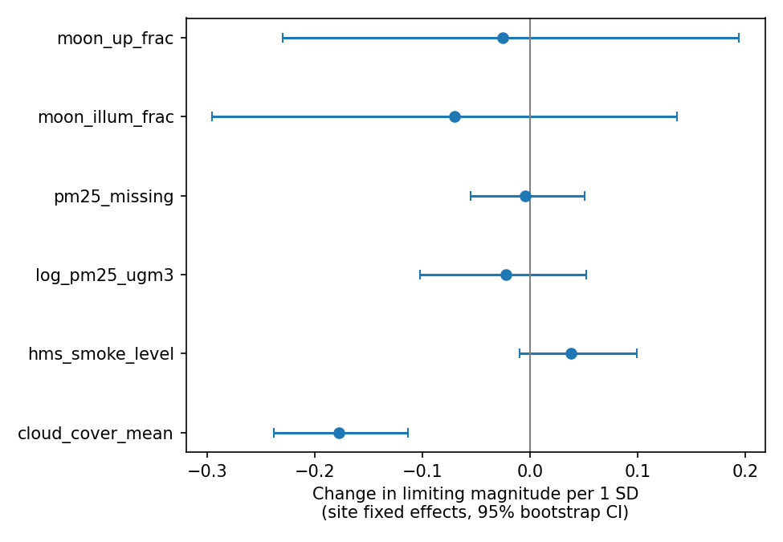
Change in limiting magnitude per one standard deviation of each condition, with site fixed effects and 95% intervals from resampling whole nights.
What this means. Half a magnitude from clear to overcast is far smaller than reality, where an overcast sky hides almost everything. The gap reflects two things: modelled cloud is a grid average that misses local conditions, and observers mostly report on clear nights, so cloudy reports are rare and atypical. The model explains 46% of the variation, and site alone explains 45%. The missing moon effect is likely the same selection at work: most reports were made with the moon low or dim. These are associations within the reports, not effects of the conditions.
Day-before information does not beat knowing the site
Research question 4 · Regression: site-median baseline, ridge regression, gradient-boosted trees · Dataset 2
Method. Each model predicts a report's limiting magnitude using only what would be known the day before: the moon and hours of darkness (both predictable), the site, its light pollution and elevation, the month, and the previous night's weather and smoke. That night's actual weather and smoke are never used. The baseline predicts each site's median from the training years. Ridge regression is a regularised linear model that stays stable with about 1,400 training reports. Gradient-boosted trees can capture interactions, such as smoke mattering more at bright sites, and handle missing PM2.5 natively. We tuned both on 2018–2022 with leave-one-year-out cross-validation (15 ridge settings, 216 tree settings), then scored all three once on the 658 reports from 2023–2025. The metric is mean absolute error (MAE) in magnitudes, because "off by one magnitude" is easy to interpret and is not dominated by a few large misses.
1.05baseline test MAE (site median)
1.13ridge regression test MAE
1.10gradient-boosted trees test MAE
658test reports, 2023–2025
Results. Neither model beats the baseline. Ridge is 0.08 magnitudes worse (95% interval 0.04 to 0.12 worse) and the boosted trees 0.04 worse (0.01 to 0.08 worse), with intervals from resampling whole site-nights. Cross-validation on the training years shows the same picture: all three average about 0.98. So the simpler baseline is the model to prefer.
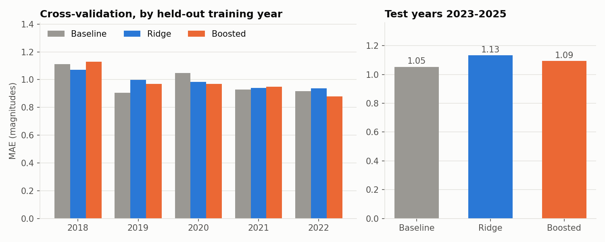
Left: cross-validated MAE for each held-out training year. Right: MAE on the 2023–2025 test years.
Why the models add nothing. Shuffling each feature shows what the models rely on: site and light pollution account for 72% of ridge's and 87% of the trees' importance, which is information the baseline already has. The most useful previous-night weather or smoke feature changes error by only 0.03 magnitudes. The main limit is the labels themselves: when two people report from the same site on the same night, they differ by 1.84 magnitudes on average, and no feature of the site or night can separate them.
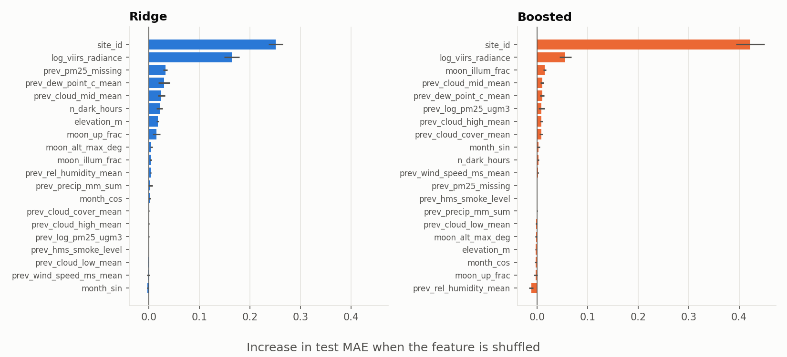
Increase in test MAE when each feature is shuffled, for ridge (left) and the boosted trees (right).
Where the errors are. All three models pull predictions toward the middle of the scale, so the darkest and brightest reports carry most of the error: misses of 2 or more magnitudes are 14% of test reports but 34% of the trees' total error. Many of the worst cases are magnitude 7 reports from bright city sites, several under heavy modelled cloud, which look like observer errors. Error is lowest at Crestone, the darkest and most consistent site. 2024 and 2025 are harder than 2023 for every model, including the baseline, which points to a shift in the reports rather than in any one model.
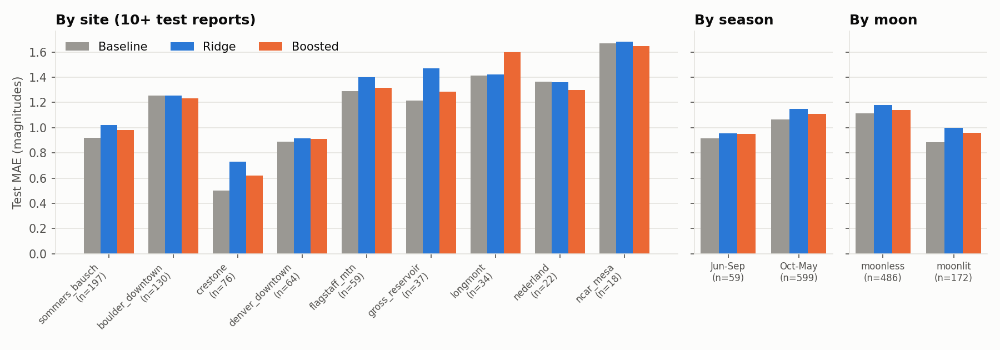
Test MAE by site (sites with 10 or more test reports), by season and by moon phase.
What our results do and do not show
Conditions and observations tell different stories. Across all nights, smoke cancels most of summer's clear-sky advantage (Q2 Part A). Yet observers report better skies in summer (Q2 Part B), because they choose when to go out. Q1 and Q2 Part A describe conditions; Q2 Part B, Q3 and Q4 describe the nights people chose to observe.
Site dominates everything. Where you stand explains far more than cloud, smoke or moon, and a site-only baseline is as good a predictor as anything we built.
Light smoke drives the smoke headline. Smoke cancels 88% of the summer advantage if light plumes count, and 28% if only medium and heavy ones do. NOAA also changed how it records smoke in July 2022.
Inputs are approximate. Cloud cover is modelled on a shared grid, smoke plumes are drawn from daytime images, and limiting magnitude is a naked-eye judgement. The 12 Boulder-area sites are not 12 independent samples.
Smoke is thin in the reports. Only 107 reports fall on smoke days (34 in the test years), so no smoke estimate from the reports is precise.
None of this is causal. Associations and feature importance describe these reports. They do not show what clouds, smoke or the moon do to the sky.
Q4 is not a true forecast test. "Day-before" means the previous night's actual conditions, not a weather forecast. Light pollution uses that year's annual satellite value, which is not published until the year ends. Every test site also appears in training, so accuracy at a new site would be worse.
Tuning results are close to ties. The best tree settings differ by under 0.001 MAE in cross-validation, so the exact choice can vary between computers. The conclusion that neither model beats the baseline does not.
Senior studying Computer Science with a minor in Data Science, completing the BAM (Bachelor's/Accelerated Master's) program in Data Science at CU Boulder. Currently a Course Assistant for two undergraduate computer science courses.
5th-year senior studying Computer Science with a minor in Astronomy, also completing the BAM program in Data Science at CU Boulder. Works as a student developer at LASP on the IMAP mission's data processing pipeline, and leads astronomy tours for AstroTours.
1st-year Master's student studying Data Science at the University of Colorado Boulder. Works as a student IT technician at the CU Anschutz Medical Campus Dental School.
Falchi, F., Cinzano, P., Duriscoe, D., Kyba, C. C. M., Elvidge, C. D., Baugh, K., Portnov, B. A., Rybnikova, N. A., & Furgoni, R. (2016). The new world atlas of artificial night sky brightness. Science Advances, 2(6), e1600377.
The scientific foundation behind VIIRS-based light pollution maps — satellite measurements of nighttime radiance from Earth. This paper validates VIIRS radiance as a legitimate proxy for sky brightness, which underpins a large part of the light pollution data used here.
U.S. Environmental Protection Agency. (2001, November). Visibility in mandatory federal Class I areas (1994–1998): A report to Congress (Appendix C: Methodology for calculating light extinction from monitored aerosol mass data).
Technical documentation on how the EPA established a "light extinction coefficient" and a normalized haze metric — the method used to quantify how smoke particles degrade sky transparency.
King, B. (2025, June). Wildfires imperil our night skies. Sky & Telescope.
A first-person account, rather than a data source, of how wildfire smoke degrades sky transparency for weeks at a time depending on the severity of the fire season.